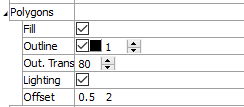

多边形
多边形

指定多边形的显示方式。
多边形：用于控制多边形渲染方式的设置容器。展开此控件可看到如下附加设置。
填充：勾选时渲染绘图项的填充。若取消勾选，则仅渲染线框。
轮廓：设置是否显示对象轮廓，并附有用于控制轮廓颜色和宽度的附加设置。
轮廓透明度：设置轮廓透明度（0 = 完全不透明；100 = 不可见）。
光照：设置是否使用位于观察者右肩上方的光源来渲染该项；这会使该项中离光源较近的部分比远离光源的部分显得更亮。
偏移：设置 OpenGL 多边形偏移的参数；如果多边形渲染效果不佳，将这些值设置得接近零可能会改善效果（第一个值是一个因子，指定用于为每个多边形创建可变深度偏移的比例因子，第二个值用于创建恒定的深度偏移）。
注意
在某些情况下，多边形字段可能出现在某个包含它的绘图项属性中。此时，它通常在该容器内后跟 切割线 属性（详情请参见标准的 切割线（cut-line） 控件）。
| 这些内容对您有帮助吗？… 版权与免责声明 |
FLAC3D © 2019, Itasca | 原文更新于 2020 年 10 月 8 日 |